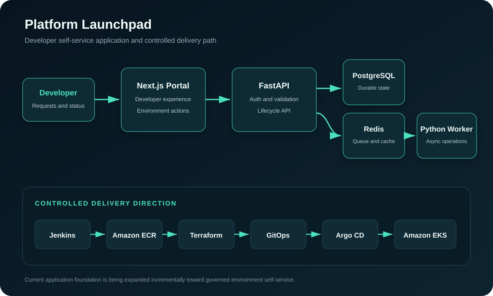
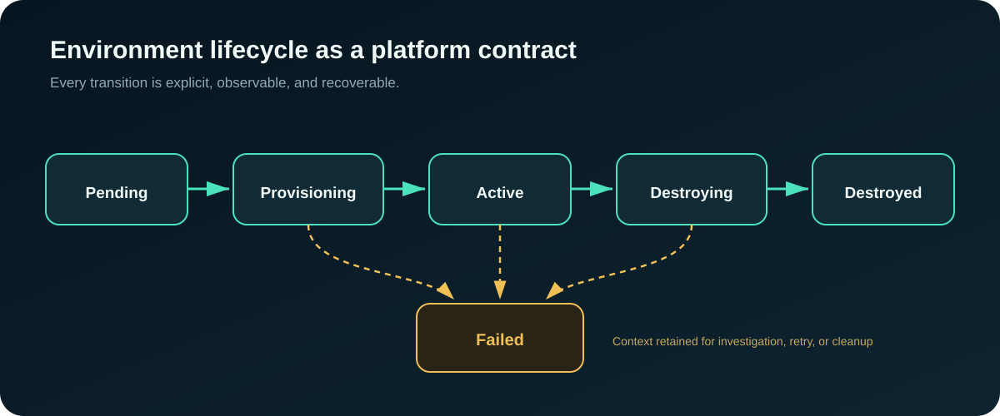

Platform Launchpad is the project I am currently building to explore a question that many engineering organizations face: how can developers request and manage environments without needing to understand every Terraform module, Jenkins stage, Kubernetes object, or AWS dependency behind the platform?
The project is an internal developer platform demonstration. It is not intended to replace a developer’s code editor. Instead, it provides a developer-facing control plane where authenticated users can request environments, follow their lifecycle, and eventually interact with standardized infrastructure workflows through a consistent interface.

What Platform Launchpad aims to accomplish
The long-term goal is to give developers a self-service path to approved platform capabilities while keeping infrastructure ownership and operational guardrails with the platform team.
The planned experience is straightforward: an authenticated user submits an environment request, the platform records it, background automation processes it, and the user can see whether the environment is pending, provisioning, active, destroying, destroyed, or failed.
Behind that workflow is a broader architecture:
- Next.js and TypeScript for the developer experience;
- FastAPI for authentication, authorization, validation, and API boundaries;
- PostgreSQL for durable application and audit state;
- Redis and a Python worker for asynchronous work;
- Jenkins and Amazon ECR for controlled CI and immutable images;
- Terraform for AWS infrastructure; and
- Amazon EKS, GitOps, and Argo CD for declarative runtime delivery.
The API, local application foundation, PostgreSQL environment, architecture documentation, container workflow, Terraform infrastructure, CI design, GitOps repository, and teardown hardening form the current foundation. Deeper application-driven integrations with Jenkins, Terraform, Kubernetes, GitHub, and AWS APIs remain planned work.
Lesson 1: A platform is a product
An internal platform cannot be designed only from the infrastructure team’s perspective. A developer should not need to know which Terraform directory to enter, which variables to supply, which Jenkins job to run, or which Kubernetes namespace to inspect. The platform should translate an intent such as “create a development environment” into a governed workflow.
That requires product thinking. The interface must make valid actions obvious, reject invalid requests early, show progress clearly, and provide useful failure information. Documentation, naming, defaults, permissions, and status messages are part of the platform experience—not secondary work added after provisioning succeeds.
Lesson 2: Model the lifecycle before building the buttons
It is tempting to begin a developer portal with screens and forms. I learned that the more important starting point is the lifecycle model.

These states define valid actions and what the system must remember. An environment should not accept another provisioning request while one is running. A failed request should retain enough context for investigation. A destroy operation must remain distinguishable from a failed provision operation.
The broader lesson is that workflow design should come before interface polish. Clear states make automation, testing, retries, authorization, and user communication easier to reason about.
Lesson 3: Asynchronous work changes the architecture
Infrastructure operations can take several minutes and fail for reasons outside the web application. A FastAPI request should not remain open while Terraform creates networking, EKS, IAM, or database resources.
This led to an asynchronous design: the API validates and records a request, persistent state tracks the workflow, and a worker processes long-running operations. The user receives an identifier and can return later to inspect progress.
That design introduces production-grade questions:
- How are duplicate requests prevented?
- Which operations are idempotent and safe to retry?
- How is a partially completed workflow resumed?
- What evidence is stored for auditing and troubleshooting?
- How are timeouts and external failures represented?
- Which component is authorized to change environment state?
Building Platform Launchpad has made me more deliberate about durable state, retry boundaries, idempotency, and observable background work.
Lesson 4: Failure must be a first-class state
An internal platform should not present every failed workflow as a generic error banner. Infrastructure failures contain useful context: the requested environment, the action attempted, the automation run, the last successful step, and resources that may have been created.
The Failed state is therefore part of the lifecycle. It supports investigation, controlled retry, cleanup, and future audit capabilities. A mature platform API must define partial success, delayed work, cancellation, retry, and failure—not only successful responses.
Lesson 5: Teardown is a product capability
Environment creation is the most visible feature, but safe destruction is equally important. During teardown testing, I encountered real AWS lifecycle blockers: a non-empty ECR repository, a Jenkins IAM access key, a detached EKS network interface, and an orphaned EKS security group.
Resolving them required more than force-delete flags. The workflow needed ownership-aware cleanup, pre-destroy preparation, bounded remediation, recovery guidance after partial destruction, and verification that only intended development resources were removed.
Lesson 6: Security boundaries should follow responsibilities
The FastAPI backend is the application authorization boundary. Jenkins should receive only the permissions needed for its delivery responsibilities. GitOps should own declared Kubernetes deployment state. Runtime workloads should use workload-specific AWS identities rather than shared credentials.
This prevents the portal from becoming a single service with unrestricted access across every platform layer. It reflects how I would design an internal platform at work: minimize standing privilege, separate control-plane responsibilities, retain audit evidence, and make sensitive operations explicit.
Lesson 7: Documentation is part of the architecture
Platform Launchpad spans several boundaries: browser to frontend, frontend to API, API to PostgreSQL and Redis, worker to automation, Jenkins to AWS, and Argo CD to Kubernetes. Writing documentation exposed assumptions that were easy to miss in code.
Who owns each state transition? Which data must survive a restart? What happens if provisioning succeeds but status persistence fails? Which repository is authoritative for deployment state? How should a partially destroyed environment be recovered?
Architecture diagrams, runbooks, case studies, and decision records make those questions visible. They also make the project easier for another engineer—or a recruiter evaluating my work—to understand.
What the project demonstrates so far
- Application and infrastructure boundary design
- FastAPI APIs and PostgreSQL-backed persistent state
- Asynchronous workflow planning with Redis and Python workers
- Containerized local development workflows
- Jenkins, ECR, Terraform, Kubernetes, and GitOps delivery design
- Resource lifecycle and failure-state modeling
- Teardown and recovery hardening
- Architecture and operational documentation
- Developer experience as an engineering requirement
The project also shows how I work through ambiguity: build in milestones, validate one boundary at a time, document what is implemented, and label planned integrations honestly.
What comes next
The next stages will deepen the connection between the application and automation layers: expanding the worker and queue workflow, integrating controlled environment actions with Jenkins and Terraform, improving status and audit visibility, and connecting GitOps deployment state back to the developer experience.
The objective is not to hide infrastructure completely. It is to give developers a safer and more consistent way to consume it while preserving the controls the platform team needs.
Final lesson
The hardest part of a developer platform is not creating a form that starts automation. The more valuable work is defining lifecycle state, responsibility boundaries, failure behavior, permissions, auditability, recovery, and a user experience developers can trust.
That combination of software design and operational engineering is why I chose Platform Launchpad. It gives me a practical way to explore Senior Platform Engineer responsibilities while building a credible internal developer platform demonstration that can continue to grow.